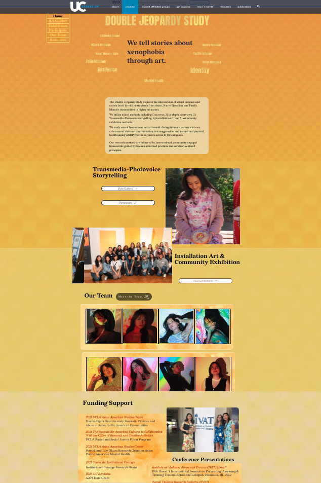

Transmedia Work
Double Jeopardy StudyCompanion site for the Double Jeopardy Study, hosted at ucspeaksup.org/djstudy. Click the preview to open the full site.

Visit ucspeaksup.org/djstudy ↗Companion site for the Double Jeopardy Study, hosted at ucspeaksup.org/djstudy. Click the preview to open the full site.

Visit ucspeaksup.org/djstudy ↗